Summary: There are are many ways to generate Pali diacritics. Here is a review of seven of them.
Writing without an alphabet
Pali is a phonetic language with no written alphabet of its own. Students of the language have therefore relied on their own native alphabets to read and write Pali, ever since the 1st century BCE, when Sri Lankan scribes first recorded the Tipitaka in the Sinhala alphabet. But when Europeans began to take an interest in South Asian languages in the 19th century, they quickly discovered that their own roman alphabet was no match for the wide range of phonemes (sounds) present in South Asian languages. European scholars thus began representing the more problematic Pali phonemes by augmenting the roman alphabet with a system of letter-pairs and diacritics, including the macron (horizontal bar), dot-over, dot-under, and tilde:
Until well into the mid-20th century, Pali typefaces using these characters were used almost exclusively by specialty book publishers; a scholar's day-to-day duties of transcribing, translating, and editing had to be laboriously carried out with typewriter, pen, and a steady hand with which to apply the diacritics. Unfortunately, the first personal computers failed to address the typographic challenge of diacritics, as they were designed around a very limited character set (ASCII) that was only barely able to accommodate the upper- and lower-case roman letters, ten digits, and a modest sprinkling of punctuation marks. The extended-ASCII set, which soon followed, offered a suite of additional special symbols, including many required for northern- and eastern- European alphabets. But still no macrons or dot-unders. In the absence of a universally accepted computer representation of non-ASCII characters, students of non-European languages were left to invent their own stopgap methods. These range from giving ordinary punctuation marks double-duty as stand-ins for diacritics, to designing special diacritic fonts (all of which are incompatible with each other), and everything in between.
Evaluating the methods
A good written phonetic representation of Pali — indeed, of any language — using one's native alphabet as a starting point should aspire to each of the following ideals:
- It should be readable by a wide audience. It should introduce a minimum of special characters that are not already present in the alphabet. It is better to modify an existing letter with a small diacritic than to introduce an entirely new character that may look like an alien squiggle to the uninitiated. A newcomer to Pali, upon seeing a t with a dot-under, should be able to guess immediately that the letter stands for some variant of a t sound.
- It should be phonetically precise. The written text should precisely and accurately capture the phonetic content. Each phoneme (sound) should be unambiguously represented by a unique letter or combination of letters.
- It should be easy to type. Writing Pali should not be a cumbersome exercise in keyboard gymnastics. Typing an a-macron should not call for a long series of keystrokes (e.g., Alt-Ctl-Shift-Esc-a).
- It should be portable. If you hand me a book — or send me a text file by e-mail — it should appear to me exactly as it did to you. I should be able to sound out the text phonetically exactly as you intended.
No single method simultaneously realizes all of these goals; no single method is "best" Your method of choice therefore depends both on your particular needs (e.g., Do you demand phonetic precision? Are you printing a book or dashing off a quick e-mail?) and on the typing, printing, and computing resources at your disposal (e.g., Do you have a Pali font? Does your text-editing app support Unicode?).
In what follows I've singled out some of the more common strategies that Pali students have used in recent decades, running the gamut from ignoring diacritics altogether to using Unicode fonts. I evaluate the success of each strategy in achieving the above-mentioned goals, to help you decide which method best suits your needs.
Method 1. Ignore the diacritics
This is certainly the simplest method. But the cost of that simplicity is heavy: the irretrievable loss of crucial pronunciation details. This is the method often used here at Access to Insight. (I should add that I do make use of the palatal nasal ñ because it is so easy to implement using HTML and because it is contained in the extended-ASCII character set found on practically everyone's computer nowadays.)
| Examples: | panatipata veramani sikkha-padam samadiyami [1]
(HTML: panatipata veramani sikkha-padam samadiyami) itihidam ayasmato kondaññassa, añña-kondañño'tveva namam, ahositi [2] |
|---|---|
| Readability: | Excellent |
| Phonetics: | Poor |
| Ease of use: | Excellent |
| Portability: | Excellent |
| Overall: | Fair. Its phonetic imprecision renders it next to useless in substantive discussions of Pali grammar |
| Uses: | Informal correspondence, email. OK for low-budget print projects that don't require linguistic precision. |
Method 2. Use capital letters
Capitalized letters represent letters with an accompanying diacritic. The method is simple, but it has ambiguities: how, for example, would you distinguish between the palatal and guttural n (n with a dot-under, and n with a dot-over)?
| Examples: |
pANAtipAtA veramaNI sikkhA-padaM samAdiyAmi
(HTML: pANAtipAtA veramaNI sikkhA-padaM samAdiyAmi) itihidaM Ayasmato koNDaññassa, añña-koNDañño'tveva nAmaM, ahosIti
|
|---|---|
| Readability: | Poor. The ever-shifting case is disturbing. When caps appear at the end of a word it looks like mirror writing. |
| Phonetics: | Fair. The palatal n and guttural n are indistinguishable. |
| Ease of use: | Good. It may take time to get used to the shift key's new significance. |
| Portability: | Excellent |
| Overall: | Fair. The manic appearance of caps at random points is hard to bear. |
| Uses: | Informal correspondence, email. Not suitable for print. |
Method 3. The Velthuis scheme: double the vowels, punctuate the consonants
In the Velthuis scheme two basic rules are observed:
- Long vowels (those usually typeset with a macron (bar) above them) are doubled: aa ii uu
- For consonants, the diacritic mark precedes the letter it affects. Thus, the retroflex (cerebral) consonants (usually typeset with a dot underneath) are: .t .th .d .dh .n .l. The pure nasal (niggahiita) m, also typeset with a dot underneath, is .m. The guttural nasal (n with a dot above) is represented as "n . The palatal nasal (n with a tilde) is ~n.
Of the plain-ASCII methods, this one is the most precise, as it carefully preserves the significance of each special character. To the uninitiated, however, the sight of all those doubled vowels and misplaced periods is utterly bewildering, perhaps leaving them to wonder if someone's keyboard is broken.
| Examples: |
paa.naatipaataa verama.nii sikkhaa-pada.m samaadiyaami
(HTML: paa.naatipaataa verama.nii sikkhaa-pada.m samaadiyaami) itihida.m aayasmato ko.n.daññassa, añña-ko.n.dañño'tveva naama.m, ahosiiti
|
|---|---|
| Readability: | Fair. Text looks like it has been sprinkled with typos. |
| Phonetics: | Excellent. |
| Ease of use: | Good. Requires learning the dual significance of the period and double-quote keys. |
| Portability: | Excellent |
| Overall: | Good. |
| Uses: | Formal scholarly correspondence, email. Not suitable for print (except low-budget short-run projects that require scholarly precision). |
Method 4. Use a little HTML
HTML has access to the extended ASCII character set, which includes many accented non-English European vowels (umlaut, circumflex, etc.), some of which can serve as reasonable stand-ins for the long Pali vowels (ä ï ü; à ì ù; or â î û etc.). The palatal n is straightforward: ñ. Whatever type of accent you adopt, use it consistently.
| Examples: |
pâ.nâtipâtâ verama.nî sikkhâ-pada.m samâdiyâmi
(HTML: pâ.nâtipâtâ verama.nî sikkhâ-pada.m samâdiyâmi) itihidam âyasmato kondaññassa, añña-kondañño'tveva nâmam, ahosîti
|
|---|---|
| Readability: | Very good. |
| Phonetics: | Fair. The consonantal diacritics are missing. |
| Ease of use: | Good. Easy to produce using most HTML authoring tools. |
| Portability: | Good. Limited to web browsers and other HTML-savvy software. |
| Overall: | Fair-Good. Improves upon the capital letter method, but doesn't capture the consonantal diacritics. |
| Uses: | Informal correspondence, email, print. |
Method 5. Mixed Velthuis/HTML
This method attempts to clear up the stuttering of Method 3's doubled vowels, by using a little HTML (Method 4).
| Examples: |
pâ.nâtipâtâ verama.nî sikkhâ-pada.m samâdiyâmi
(HTML: pâ.nâtipâtâ verama.nî sikkhâ-pada.m samâdiyâmi) itihida.m âyasmato ko.n.daññassa, añña-ko.n.dañño'tveva nâma.m, ahosîti
|
|---|---|
| Readability: | Fair. It looks like it has typos, although perhaps not quite as many as pure Velthuis. |
| Phonetics: | Excellent. |
| Ease of use: | Fair. More complex than Velthuis, since it requires a combination of special punctuation and the use of special HTML characters. |
| Portability: | Good. Limited to web browsers and other HTML-savvy software. |
| Overall: | Fair. Although this hybrid does slightly improve the appearance of Velthuis, it still looks like an error-filled jumble. |
| Uses: | Informal correspondence (scholars who demand precision are bound to prefer good old pure Velthuis). Not generally suitable for e-mail or print. |
Method 6. Special Pali fonts
For high-quality print projects, nothing beats a well-designed Pali font. For an extensive review of available Pali and Sanskrit fonts, see Transliteration and Devanagari Fonts for Sanskrit, by Ulrich Stiehl. The Association for Insight Meditation's Pali Font Resources page offers several ANSI and Unicode fonts suitable for working with Pali.
| Example (in "Normyn" font): | 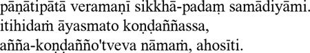 |
|---|---|
| Readability: | Excellent. |
| Phonetics: | Excellent. |
| Ease of use: | Variable — it depends on the keyboard mappings used by a particular font. |
| Portability: | Poor. These fonts don't all share the same coding standards; they are not interchangeable. If I send you a text document that I formatted with font X, and you display it with font Y, the Pali characters may not show up properly. |
| Overall: | Excellent — but only for documents that are to be shared in print (hard copy) form or as PDF files or GIF images. |
| Uses: | Printing. Not suitable for e-mail or the web, except when embedded in PDF files or GIF images. |
Method 7. Unicode and Unicode fonts
Unicode has emerged in recent years as the international standard for representing characters from most of the world's alphabets. All the special characters we need for Pali transliteration may be found in Unicode's Latin Extended-A, and Latin Extended Additional code charts. They can therefore be easily generated using HTML, provided that your web browser uses a Unicode-savvy font.
There are many Unicode fonts available that contain the characters needed for Pali.
The following table lists the HTML Unicode entities required to generate each of the special Pali characters. If your web browser supports Unicode, the characters appearing in the last column of the table should resemble those appearing the shaded column. If they do not match, then you may have to upgrade your web browser, install Unicode fonts on your computer, or both. For details about configuring your computer and browser to use Unicode, see the Unicode website.
| Pali letter | Velthuis | HTML | Rendered on your browser as [3] | |
|---|---|---|---|---|
| A macron | 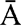 | AA | Ā | Ā |
| 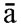 | aa | ā | ā | |
| I macron | 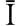 | II | Ī | Ī |
| 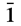 | ii | ī | ī | |
| U macron | UU | Ū | Ū | |
| 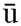 | uu | ū | ū | |
| N dot-over | "N | Ṅ | Ṅ | |
| 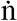 | "n | ṅ | ṅ | |
| M dot-under | 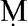 | .M | Ṃ | Ṃ |
| 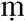 | .m | ṃ | ṃ | |
| N tilde | ~N | Ñ | Ñ | |
| 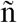 | ~n | ñ | ñ | |
| T dot-under | 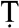 | .T | Ṭ | Ṭ |
| 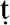 | .t | ṭ | ṭ | |
| D dot-under | 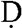 | .D | Ḍ | Ḍ |
| 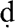 | .d | ḍ | ḍ | |
| N dot-under | 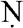 | .N | Ṇ | Ṇ |
| 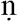 | .n | ṇ | ṇ | |
| L dot-under | 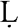 | .L | Ḷ | Ḷ |
| .l | ḷ | ḷ | ||
| Examples: | pānātipātā veramaṅī sikkhā-padaṁ samādiyāmi itihidaṁ āyasmato Koṇḍaññassa, añña-koṇḍañño'tveva nāmaṁ, ahosīti |
|---|---|
| Readability: | Excellent |
| Phonetics: | Excellent |
| Ease of use: | Poor-Good, depending on the particular software you use (HTML authoring program, word processor, e-mail client, etc.). |
| Portability: | Good-Excellent. Requires the installation of at least a basic set of Unicode fonts. |
| Overall: | Good. Still a little cumbersome to use in some software apps, a shortcoming that will probably fade in the next few years. |
| Uses: | Web, email (if email client permits easy typing of Pali characters), print (with well-crafted Unicode fonts). |
Notes
- 1.
- The first of the five precepts: "I undertake the precept to refrain from taking life."
- 2.
- The last line of the Buddha's first sermon (SN 56.11): "And that is how Ven. Kondañña acquired the name Añña-Kondañña — Kondañña who knows."
- 3.
- These characters will display properly only when your browser is set with a default font that contains appropriate Pali Unicode characters.